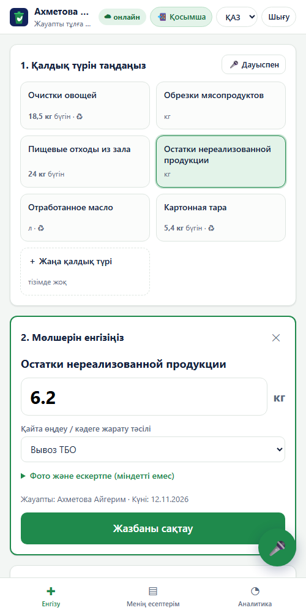

Смартфоннан енгізу
Ас үйде 3 рет басып жазу
📱 Жауапты тұлғаҚандай ақпарат тіркеледі
- Күні, қалдық түрі, салмағы (кг) немесе көлемі (л), кәдеге жарату тәсілі, жауапты тұлға — АТУ-дың қағаз кестесіндегідей
- Әр түр бойынша күндік және айлық жиын бірден есептеледі
- Тексеру: салмақ > 0, ақылға қонымды шек, күн болашақта емес, қайталану туралы ескерту
- Қалдық фотосы, ескертпе, бағдарламашысыз «＋ Жаңа қалдық түрі»
- Жоба жоғалмайды, есеп тапсыру мерзімі әрдайым экранда

